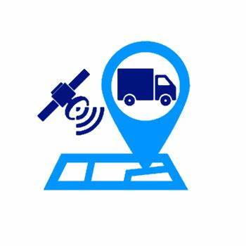
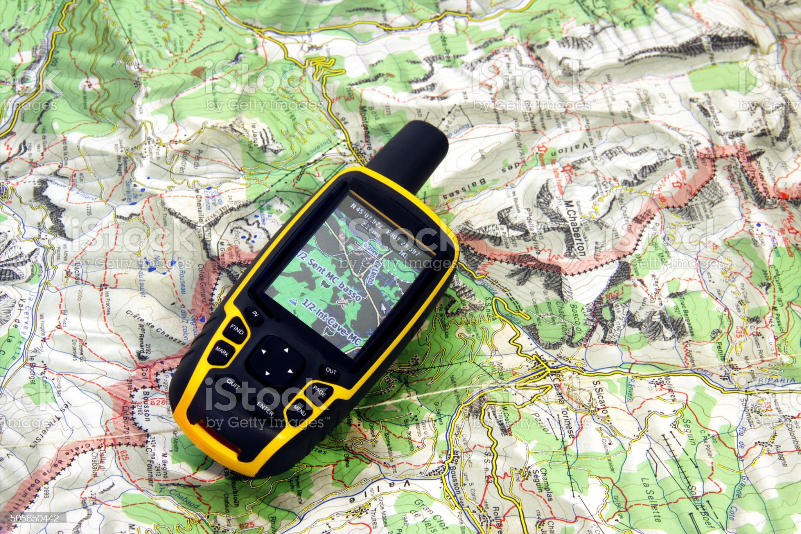
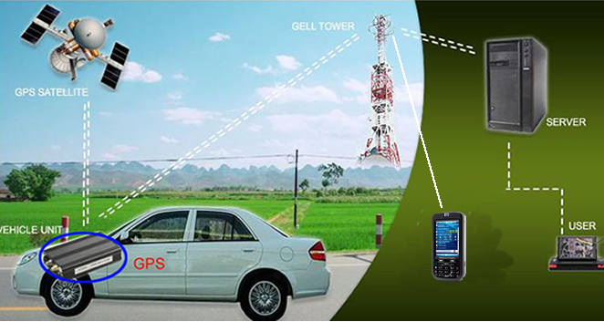

<!DOCTYPE html>
<html>
<head>
    <body background="img/fina.jfif"bgcolor="white" text="black">
<title style=color:black></title>
</head>
<footer>
 
        </form>
<H1 id="titulo">PROTRACK GPS</H1>
<H4>MONITOREO A TU ALCANCE</H4>
 
<body background="escritorio/satelital.png" bgcolor="white" text="black">
    
 
 
 
<p><title style=color:black></title><center>¿QUIENES SOMOS?</font></p></center>
<p>Desde el año 2002, en TRACKER GPS S.A.S, hemos liderado la industria de rastreo satelital de vehículos, gestión de recursos móviles y servicios de logística en países como Estados Unidos, México, y Colombia, Monitoreamos más de 5.000 vehículos del sector agrícola, construcción, minero, energía, logística, transporte, gobierno, entre otros. </p>
<p><title style=color:black></title><center>MISIÓN</font></p></center>
<p>Brindar a nuestros clientes una solución rentable con tecnología de punta, para el control y localización de bienes y personas en todo momento desde la palma de su mano.</p>
<p><title style=color:black></title><center>VISIÓN</font></p></center>
<P>Ser una compañía multinacional basada en la satisfacción total de nuestros clientes.</P>

 
<header>
    <h1>Nuestros Servicios</h1>
</header>
 
<section>
    <article>
        <h3>SEGURIDAD</h3>
        <p>Nuestro GPS funciona mediante satélites que transmiten señales de radio que cuentan con datos de sus respectivas localizaciones. Además de eso, informan sobre su estado actual y tiempo preciso. Esto, gracias a relojes atómicos a bordo. Todas las señales de radio transmitidas por el satélite viajan a través del espacio prácticamente a la velocidad de la luz, es decir, a casi 300,000 kilómetros por segundo.</p>
        
 
    <article>
        <h3>PRIVACIDAD</h3>
        <p>Cuando utiliza el software o la aplicación móvil, podemos usar la tecnología GPS (u otra tecnología similar) para determinar su ubicación actual a fin de brindar esta información a los usuarios que ha autorizado para eso y brindarles servicios relevantes. No compartiremos sus datos de ubicación con otros usuarios o socios. Sin embargo, podemos usarlo para el análisis estadístico y compartir esos datos agregados no personales con otras partes.</p>
        
 
        <article>
            <h3>Rastreo, Localización y Monitoreo</h3>
            <p>Nuestro software de rastreo y monitoreo te permite optimizar los tiempos, a partir de la información que arroja el sistema GPS</p>

 
</select>
<table>
    <tr>
 
        <th>Para ser contactado, deje aqui sus datos</th>
       
    </tr>
</table>
 
 
<form action="/formulario" method="POST">
    <label for="nombre">Nombre</label>
    <input type="text" id="nombre" name="nombre" placeholder="escriba aqui"/>
 
    <label for=telefono">Telefono</label>
    <input type="text" id="telefono" name="telefono" placeholder="escriba aqui"/>
<br>
<label for="MENSAJE">Mensaje</label>
<textarea cols="50" rosw="10" id="Mensaje" placeholder="ingrese Mensaje" name="MENSAJE"></textarea>
<br>
<button type="button">Tipo boton</button>
<button type="reset">Tipo reset</button>
<button type="submit">Tipo submit</button>
<footer>
    <a target="_black" href="file:///C:/Users/2019/Desktop/zuleta%20marin/intro.html/index.html">Ir a mi pagina</a>
    <a href="#titulo">Ir al comienzo</a>
    <a href="mailto:pazuleta0@misena.edu.co">contactanos aqui</a>
    <p>&copy;Desarrollado por PAULA ANDREA ZULETA MARIN</p>
</footer>
<body>
    <P>25 NOV 2022</P>
 
</footer>
 
 
</body>
</html>